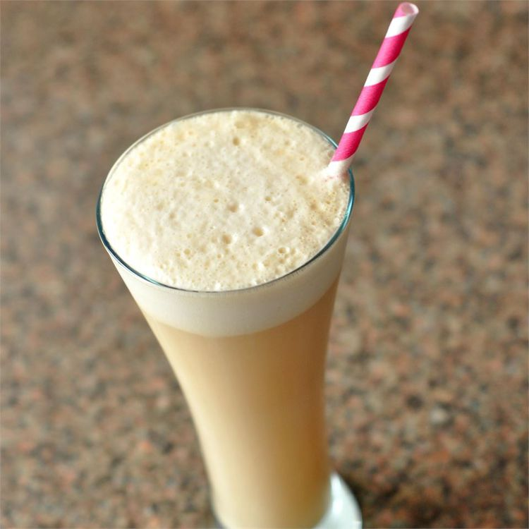

ButterBeer

Butterbeer for your Belly
A delicious butterbeer recipe from the novel "Harry Potter" full of easy to find ingredients.
Ingredients
- 2 tablespoons butterscotch toppings
- 1 cup soda water
- 1 cup cream soda
- 2 tablespoons whipped cream
- 2 tablespoons caramel sauce
- 1 pinch salt
Steps:
- Chill a glass mug in the freezer for at least 15 minutes.
- Combine the butterscotch topping and soda water in the chilled mug; stir until thoroughly mixed. Pour the cream soda into the mug.
- Stir the whipped cream, caramel sauce, and salt together in a small bowl; spoon atop the soda mixture. Stir lightly; it will froth!